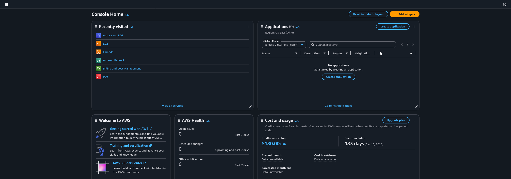

Learning AWS
Today, June 10th, 2026, I started learning about AWS technologies (S3, EC2) and how to use them. Now, as what I would consider a "standard-issue-wannabe-software-engineer", I was never exposed to AWS and it's services during my undergraduate degree. In my graduate degree it came up numerous times but the project(s) that I was working on did not require us to interact with it at all. I only heard classmates and professors reference it in conversation.
Taking on this task is certainly daunting because every couple months I heard a new acronym paired with the already monolithic acronym "AWS". EC2, S3, IAM, RDS, EFS, VPC, Route 53, etc.
As of writing this, I know better now about what is what (sort of), but coming into this I did not have a clue as to what went where. It should be stated that I am only familiar with what those acronyms mean, not actually how to use those services (yet!). I have created my root and IAM admin account, run through those free credit-giving tutorials (except the Aurora/RDS one was buggy) and installed AWS CLI and hooked it to the dashboard with an access key, but that is hardly even considered scratching the surface.
So, what prompted this undertaking? Well, I was very interested in adding that I had S3/EC2 experience onto my resume (as any new grad would), but also in making a project from my graduate degree more publicly available: SteamRec. You can read more about that project here. #TODO.

The Process
As someone who struggles to find a clear goal or get a clear direction of a project going, AI has been very helpful in directing the energy that I have but structuring some goal posts and guidelines. I turned to AI during my learning a few times more than I should have to actually do the coding in some aspects, or at the very least dumb down concepts to a point where I wasn't struggling the way you do when you really learn and internalize something. So, my use case here was to have Claude Fable (only available during June 26!) to layout a "game plan" of sorts of what to learn, where to learn from, and small tests/checkpoints to give myself to ensure that what I am learning is sticking and that I understand a bit deeper.
It is not a bulletproof plan in the least, and I think that is good especially when you are aware of that. AI is not going to catch every thing you should and should not do, and that's precisely where the learning happens. Get the foundations, try some things out, break something! I know you probably read that everywhere, but I am yet another testimonial towards that being the ground truth of real neural pathways forging anew inside your head.
After getting the layout, it started me off with some prefunctory phases of getting myself set up to learn, which I think is incredibly important for someone like myself (any ADHDers in the room?). The hurdle of starting, of "where do I begin" is diametrically opposing to "I want to make something cool!" so having a starting point, a tool bin of sorts, is helpful and encouraging to someone who just... doesn't have a darn clue where to start. Especially with the beast that is AWS (without guidance as well!).
With a well laid out plan, I began following it today and I am excited to learn more about AWS, migrating my project from a local, VT exclusive LLM project to a more open, widely available project that many can use (although I hope that doesn't happen because I will get rate limited and slammed with hosting costs immediately).
Dashboard
A small note: it was incredibly daunting to be met with this huge dashboard right after creating my (free) account. Thankfully I had the direction of the game plan from Claude to direct me on where to look and what to do in each place because this is a metric ton of information presented immediately.
